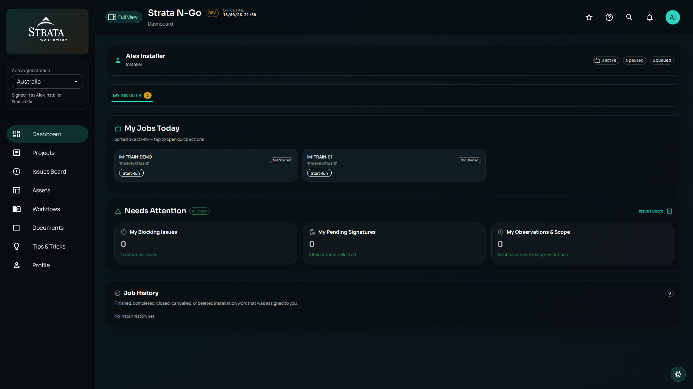
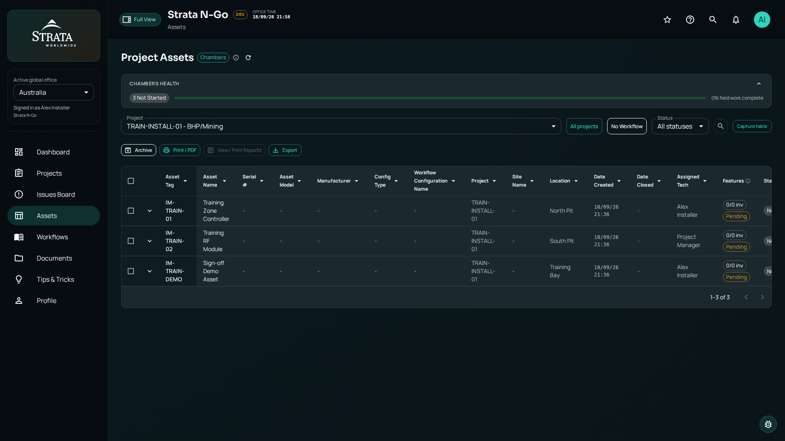
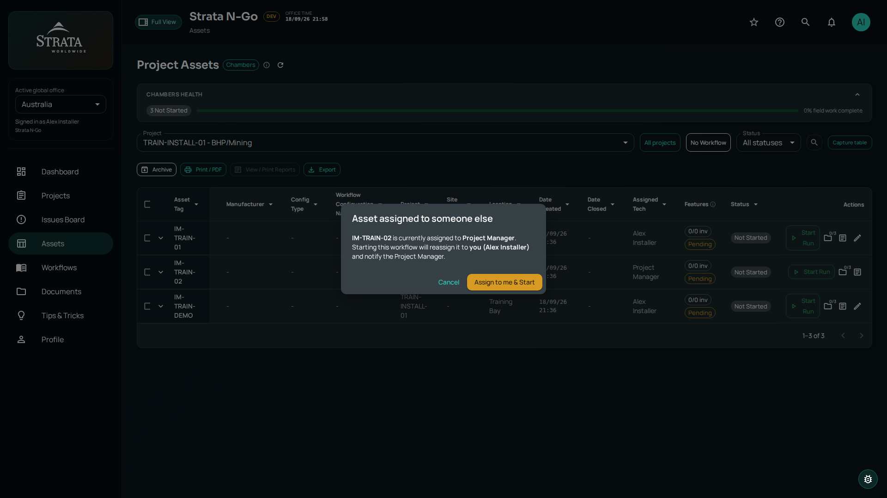
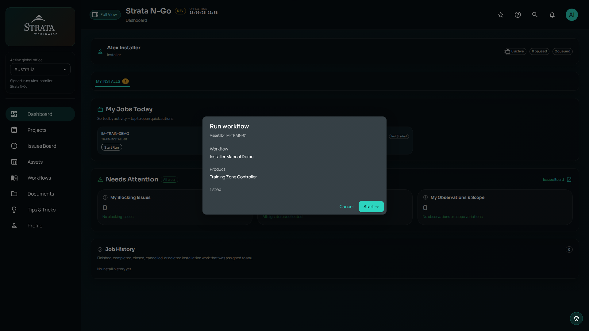
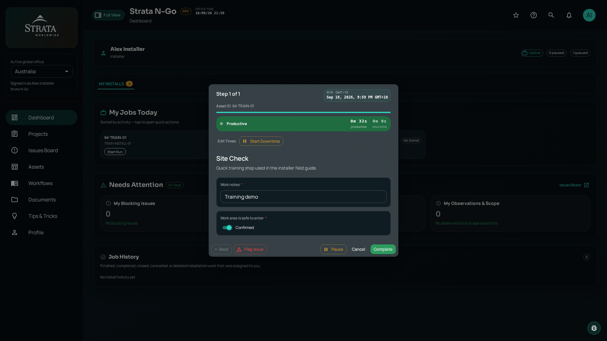
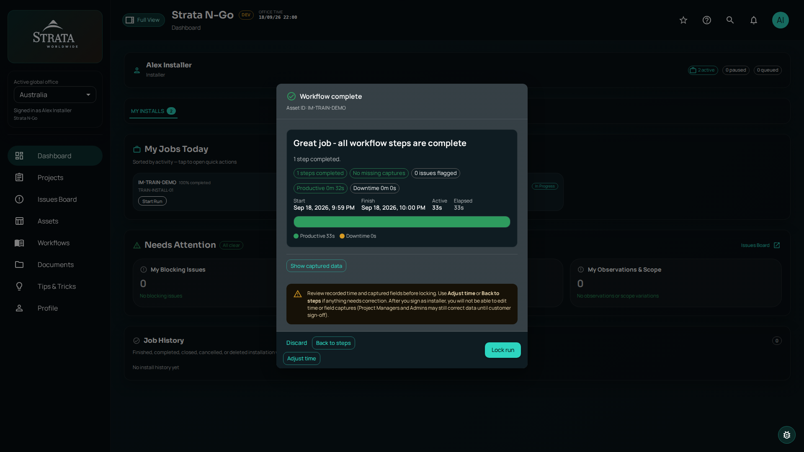
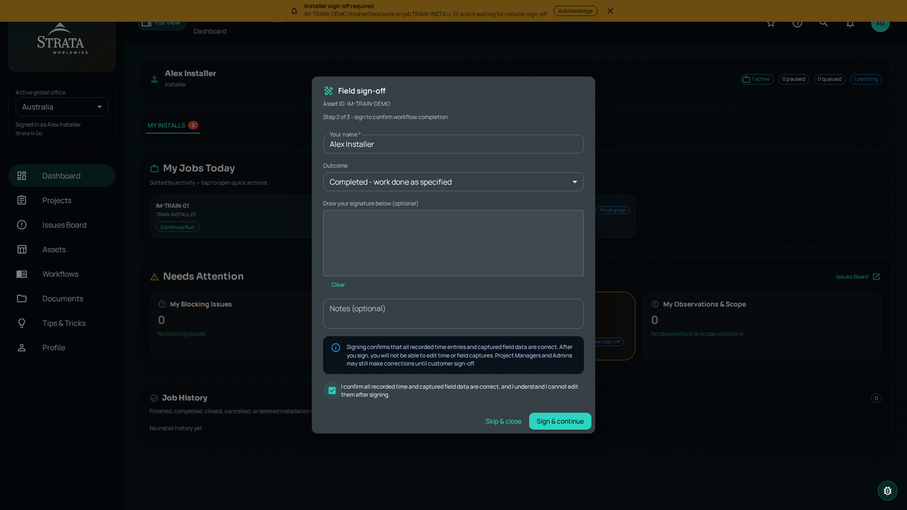

Installer Field Guide
How to find your jobs, open assets, take over work when needed, and complete a workflow from start to sign-off.
How to find your jobs, open assets, take over work when needed, and complete a workflow from start to sign-off.
Open the app in your browser or on your phone. Enter the email and password your project manager gave you, then tap Sign in.
After first login you may see a welcome tour — tap Skip for now to go straight to your dashboard.
Installers land on the Dashboard (/). Your main tab is My Installs — this shows work assigned to you, not the whole company.

This is your daily work list — assets assigned to you, sorted by recent activity. Each card shows:

| Section | What it means |
|---|---|
| Runs Missing Media | Completed runs that still need photos — tap Add Missing Photos |
| My Pending Signatures | Field work done — you still need to sign off |
| My Blocking Issues | Issues you must resolve before the run can be locked |
| Job History | Finished or closed jobs that were assigned to you |
Open Assets in the sidebar (route: /installations/assets). Page title: Project Assets.

The Assigned Tech column shows who owns the job. Your name should appear on assets assigned to you.
There is no separate “Take over” menu. You take over work by starting or continuing a workflow on an asset that is unassigned or assigned to another person.

Every installation or inspection follows the same high-level path:
After you start a run, the runner shows Run workflow with the asset ID, workflow name, and step count. Tap Start → (or Continue → if resuming).

Work through steps one at a time. For each step you may need to:
Use Next step → to advance. On the last step, tap Complete. You can Pause anytime and Resume Run later from the dashboard.

When all steps are done, you see Workflow complete. Review:
Fix blockers with Add Missing Photos or Resolve Blocking Issue(s). When everything is clear, tap Lock run.
Locking saves the run permanently — after you sign, you cannot edit captured data (PM/Admin can until customer sign-off).

After locking (or from Installer Sign-off on the dashboard), complete Field sign-off:
Tap Sign & continue. The run moves to customer sign-off (often collected on site or via email link from the PM).

| When you see… | Do this |
|---|---|
| Start Run | Begin a new workflow on this asset |
| Continue Run | Return to an in-progress run |
| Resume Run | Continue after a pause |
| Add Missing Photos | Upload photos required before lock/sign |
| Resolve Blocking Issue | Fix a blocking issue on the asset |
| Installer Sign-off | Sign after field work is complete |
| Lock run | Finalize the workflow run on the summary screen |
Strata N-Go Installer Field Guide · Screenshots captured from the live web application.